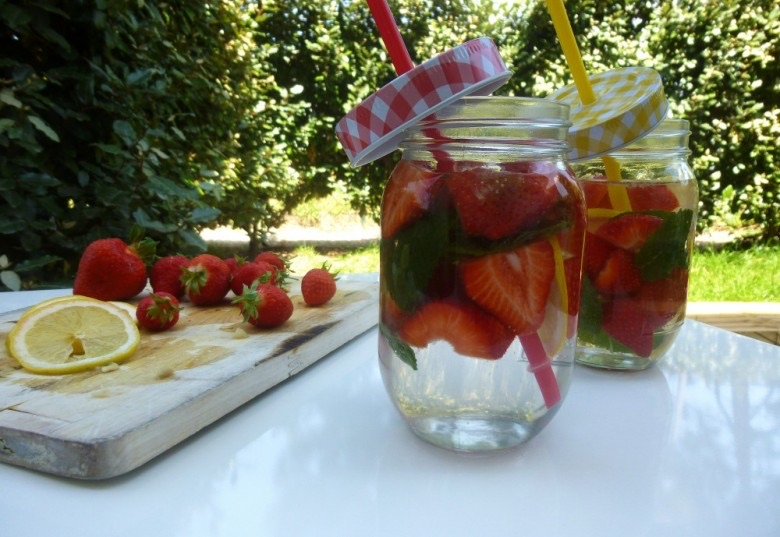

Detox Water

« Detox Water » qui n’a pas récemment entendu parler de cette toute nouvelle mode?Le but est simple : éliminer les toxines et nettoyer l’organisme de l’intérieur tout en lui apportant des vitamines, des fibres grâce aux différentes vertus contenus dans les fruits, légumes etc.. Mouais… perso je ne suis pas convaincue du côté « detox » mais je trouve l’aspect visuel très sympa et c’est ce qui m’a poussé à faire ma propre detox water fraise-citron-menthe.
Cette boisson a d’ailleurs été la bienvenue ce weekend car ici il a fait très chaud et ce fut très rafraichissant.
La detox water se prépare super rapidement. Il suffit de laisser infuser des fruits , légumes , herbes de votre choix dans un verre d’eau (eau plate ou eau gazeuse) pendant toute une nuit.
Cela permet d’obtenir le lendemain une boisson bien fraîche et qui se présente comme étant une bonne alternative aux boissons sucrées.
Ingrédients
- fraises - 250 g
- citron - 1
- menthe - 10 feuilles
Instructions
- Couper les fraises en deux et le citron en tranches
- Nettoyer les feuilles de menthe et en ajouter 5 dans chaque verre
- Dans de grand bocaux (les miens viennent de chez casa) mettre les fruits et la menthe
- Rajouter de l'eau (plate ou petillante) jusqu'en haut du verre, fermer
- Laisser infuser minimum 2h
- Déguster frais!

Les tips de la communauté
Recette simple qui suscite des questions pratiques. L'auteure confirme qu'on peut consommer les fruits après infusion ou les mixer, bien qu'ils aient perdu une partie de leur saveur.
Astuces
- Manger les fruits gorgés d'eau après infusion
- Mixer les fruits comme alternative